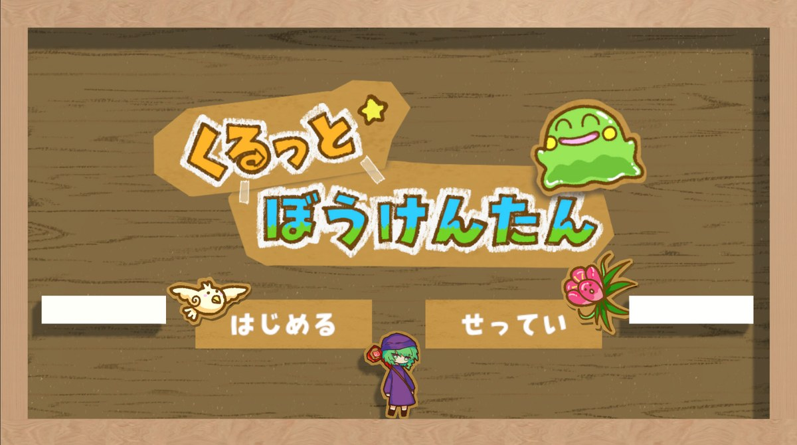
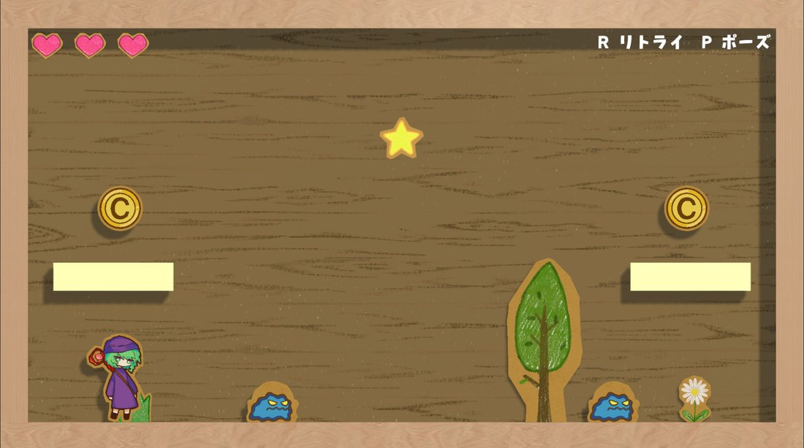
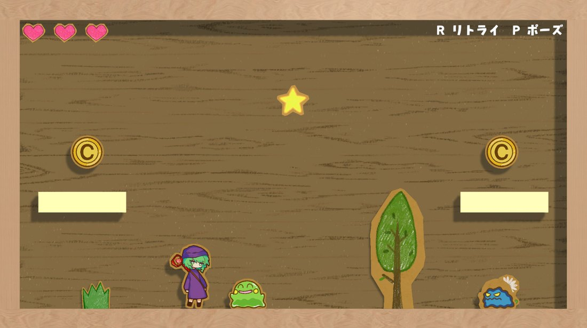
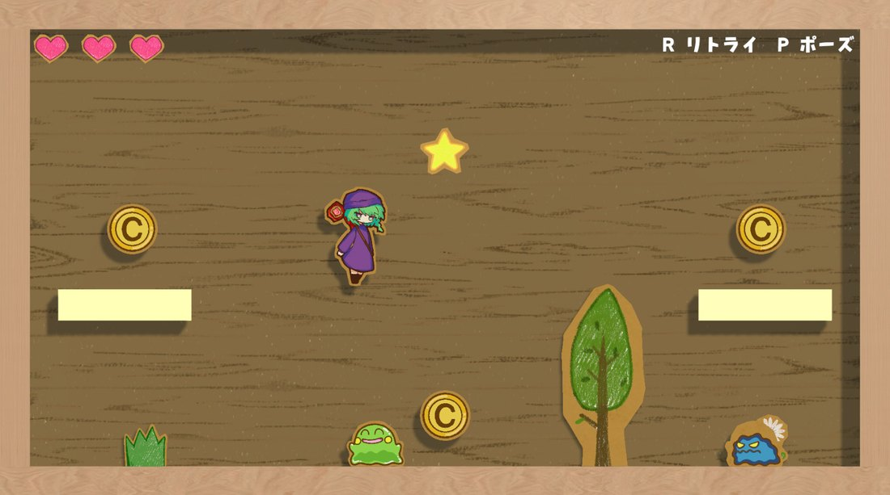
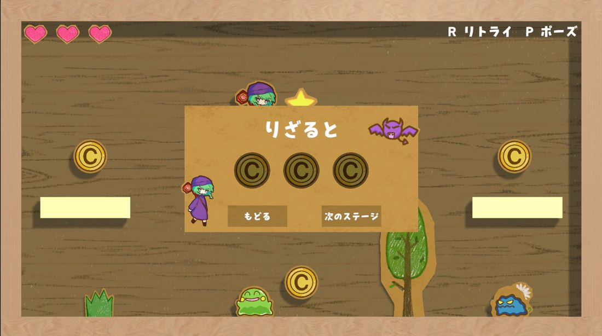
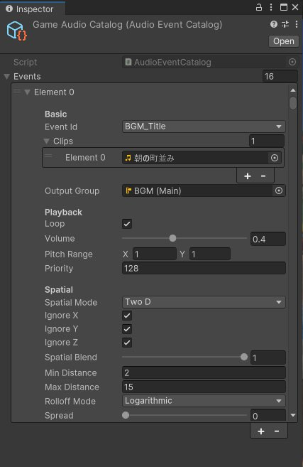
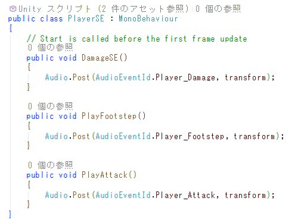
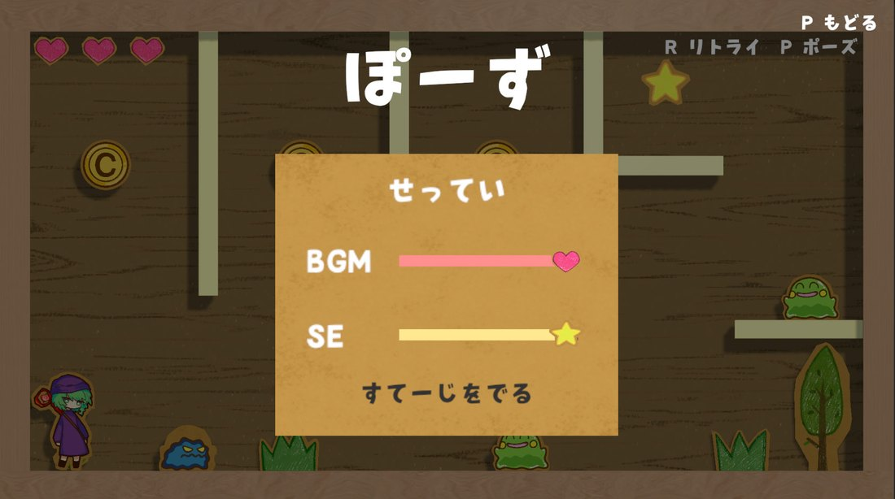
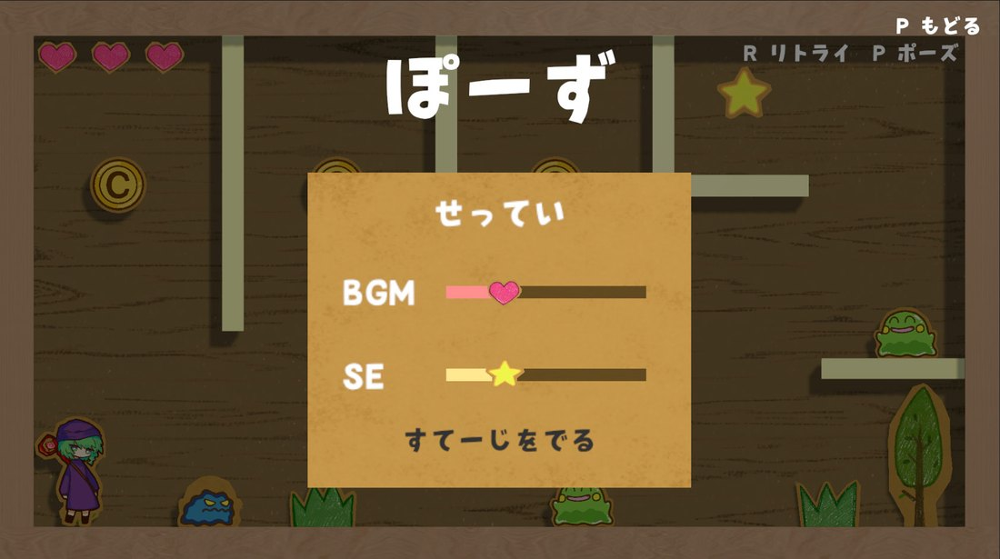

06
Unity / チーム制作
くるっと☆ぼうけんたん

- ジャンル
- パズルアクションゲーム
- 開発環境
- Unity
- 制作情報
- チーム制作
- 担当箇所
- サウンド全般、統合
敵を攻撃し、Playerが活用できる足場などのギミックへ変化させてゴールを目指すゲームです。UnityEventを利用したSE再生の仕組みや、Unityで扱いやすいAudioManagerを作成しました。
Gameplay Video
プレイ動画
ゲームの流れ
倒した敵が、トランポリンなどのギミックに変化します。ギミックを組み合わせて、通常のジャンプでは届かないゴールを目指します。




音声再生を管理するAudioManager
2D/3D再生の切り替え、ピッチ調整、複数クリップからのランダム再生に対応。設定をScriptableObjectにまとめ、音量や再生方式を調整しやすくしました。


ポーズ画面と音量設定
TimeScaleを0にしてポーズ画面を作成。BGM/SEのBusとスライダーを紐づけ、ゲーム内から音量調整できるようにしました。

